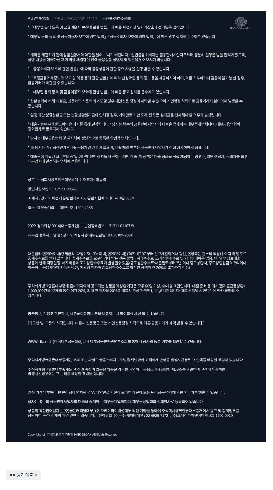

[회생자대출공지] 승인률 굉장히 높은 유미(테크)캐피탈 상품 오픈 공지
[회생자대출공지] 승인률 굉장히 높은 유미(테크)캐피탈 상품 오픈 공지
타사 다 부결된 고객들중 많이, 심지어 큰금액으로 승인이 되는 유미캐피탈 상품이 오픈되어 공지드립니다.
자격조건
1. 4대가입직장인 재직기간 만3개월 이상. (4대미가입직장인, 프리랜서, 사업자, 주부님들은 접수불가.)
2. 변제현황조회필수.
3. 면책자는 면책후 1년이내 가능.
특장점.
1 최대한도 : 유미 2000만 + 테크 2000만 (회생적립금대비 130%정도)
2. 타사들은 연소득이 아무리 높아도 부채총액이 높으면 안해주는데..
유미는 1-2건 대환해서라도 맥스로 내줄 수 있다고 함
3. 무서류 사전의뢰가능. (사전의뢰 승인시 본심사 승인률 매우 높음)
4. 기존 사용자도 추가대출로 접수가능.
뱅크앤론매니저의 연락처는 010-2506-2425 [(주)뱅크앤론 사장 김용혁] 입니다~ 제 번호 저장후 카톡주시거나 전화 주시면 매우 친절하고 신속하게 필요한 도움 드리겠습니다. (상담가능시간 : 월~목 09시~18시 / 금 09시~16시)
또는 아래 상담신청하는 링크 클릭하셔서 상담신청 남겨 주시면, 업계 최고의 실력을 갖춘 당사의 전문 상담직원들 통해서 매우 친절하고 신속한 도움 받으실 수 있습니다. 감사합니다.^^
상담신청 -> https://cafe.naver.com/cityman88/29497

https://cafe.naver.com/cityman88/308881